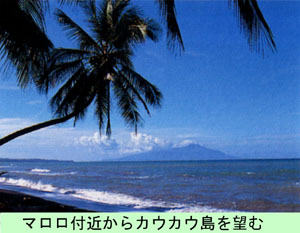

|
第２９ アレキシスハァフェン教会で牧師の祈り
 マダンからいくらも離れていない所にアレキシスハァフェンという部落があった。そこにゴシック様式 の建築で、尖った塔をもつ美しい教会があり、牧師さんと尼さんが大勢暮らしていた。ここ東部ニユーギ ニアは第一次世界大戦まではドイツの植民地であったが、その後は豪州の信託統治となっていたことは前 述した通りです。このアレキシスハァフェンに有る教会はドイツの統治時代に建築されたものであり、尖塔の格好はドイ ツ国民性の特徴であろう、独特の形をしている。教会の周囲には、背が高いヤシ林が茂り、ヤシの木の下 には、青々とした芝生がはえていて、静かなたたずまいをしていた。素晴らしい景観で、誠に恵まれた環 境だったのには驚いてしまった。羨ましいぐらいだった。 敵は相変わらず、毎日午前１０時頃と午後３時頃の２回、規則正しく来襲し、爆撃する。物凄い量の爆弾 を投下してから、悠々と引き上げて行く。憎いが、どうしょうもない。これが敵味方のこの頃の日課であ った。 敵機は所かまわず爆撃する。我々は防空壕に避難し、敵機の去って行くのを辛抱強く待つ。勿論、教会 付近にも爆弾を投下する。教会も何時爆撃されるか判らない。誠に危険な状況になってきた。そんな危険 な状況下にあっても、牧師さんも尼さんも爆撃中にもかかわらず、逃げようとはしない。そんなある日、 凄まじい空爆中に、ひざまづいて、一心に神に祈り続けている牧師の姿を見た。その時、私は危ないなあ？ と心配した。が、彼等は信仰心が強く、爆撃中にも、神に対し敬虔な祈りをささげていた。その姿を見て びっくりし、また、深い感銘も受けた。 今日はいつもより、爆撃がひどいようだ。アレキシスファフェンの町中が爆撃されているのに、牧師さん 達は教会から一歩も外に出ない。決して退避しないのには頭が下がる思いだった。いよいよ爆撃が激しくな り、とうとう敵は、この教会にも爆弾を投下し爆破した。この爆撃で、敬虔な牧師さんも尼さんも、皆さん 一緒に天国にいってしまった。教会は跡形もなく、焼け野ケ原となってしまった。 ところで、ウリンガンの教会に働いていた牧師さんも尼さんも彼等は本国で失恋したから、こんな秘境の ニユーギニアに逃げて来たと言っていたが、もしかすると、面倒な事になるのを恐れて、そう言ったのでは ないかとこの時思った。 アレキシスハアフェンの牧師さん達の姿を見ていると、熱い信仰心があって、キリスト教の伝導のために きた事を知った。そんな訳で、ウリンガンの牧師も尼さんもきっと、敬虔なクリスチャンでこの未開の地に 布教に来ていたことに気付いた。 若い私には、牧師さん達の心境は到底理解できない事だった。理由はともかく、よくもこの様な秘境に伝 導に来たものだと感心するほかはない。宗教は独特の別の世界であると思う。（１９４３年３月×日） |